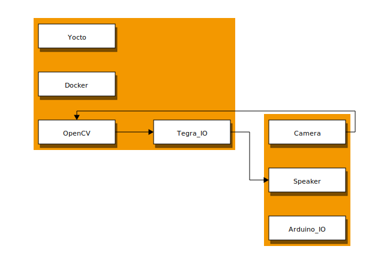

AESD 5713 Final Course Project
Block Diagrams
Hardware Block Diagrams

Software Block Diagrams
NOTE: TODO
Functional Block Diagrams
NOTE: TODO
Target Build System
We intend to use Yocto as the bring up tool to generate Linux image on NVIDIA Jetson Nano.
Hardware Platform
Intended hardware platforms for this project:
Open Source Projects
Previously Used Content
- Yocto
- Signal handlers
- Clocks
- Init Scripts and Rootfs Overlays
New Content
- Yocto Image for Jetson Nano
- Creating Modules for Arduino BLE 33
- USB Interface for Jetson and Arduino
- Deplying Tiny Machine Learning (TinyML)
- Case study for TinyML
Shared Material
Source Code Organization
Group’s Overview
Team Project Members
- Caleb: Yocto Image Setup and build for Jetson Tegra
- Zach: Communication Between Subsystems (Serial/I2C/USB/Bluetooth)
- serial communication between subsystems
- GPIO communication to show successful inferencing
- Trigger on board LED for demonstration purposes
- Arpit: Machine Learning Framework and TinyML Setup for setup
- Dive Deep into Tiny Machine Learning
- Integrate Arduino Nano BLE and OV7675 Camera to detect Person in frame